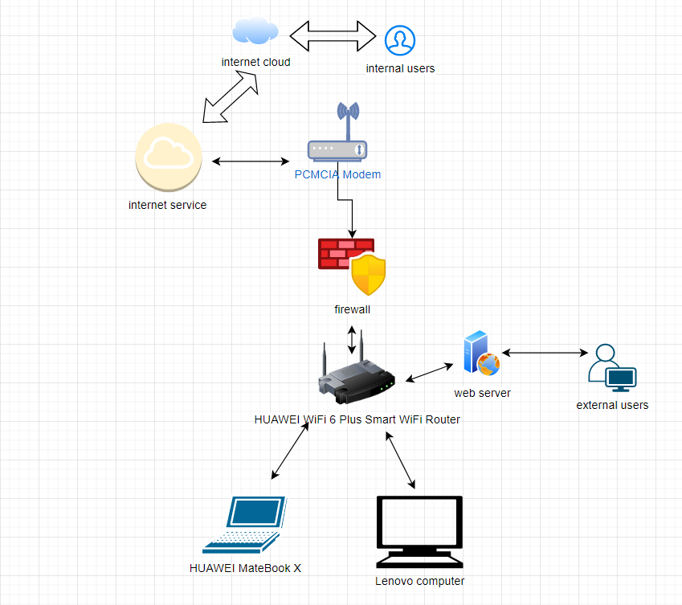
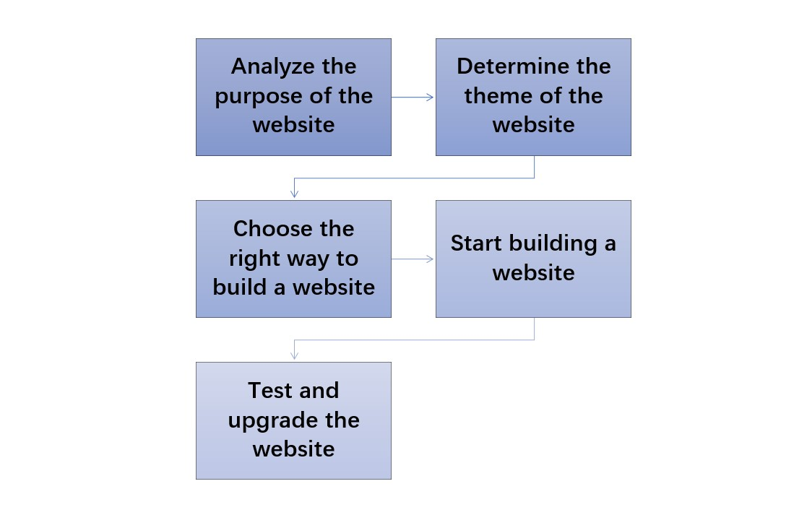

The hardware required to complete this project is a mobile phone and a laptop, and the software is Komodo Edit and Apache NetBeans.
Building a website about your resume can better showcase your strengths to others, help you land a good job, and provide an easier line of communication for future employers and friends. Let people know my information better on the site. Filling in the information about personal information on this website requires the use of html and css languages. html is a markup text file used for fonts, colors, graphics, and hyperlink effects on World Wide Web pages. CSS provides a rich document-style appearance, as well as the ability to set text and background properties. Using both html and css can help us build our website better.
 | Sylas(Huang Wenxu) | While(He Dongming) | |
|---|---|---|
| Name this system? | Internet management system | Cloud service management system |
| What are the system objectives? | Surf the web safely | Provide customers with Internet access |
| List 3 essential system features and components? | 1. Upload user information to the cloud 2. Firewall protection protects the computer 3. The router accepts the signal 1. internet cloud 2.modem 3. wifi | 1. Upload user information to the cloud 2. Firewall protection protects the computer 3. The router accepts the signal 1. internet cloud 2.modem 3. wifi | List 3 essential hardware from this system. | Computer, mobile phone, router | Computers, servers, firewall | List 3 essential software from this system. | Firewall, database, data downloader | cloud, firewall | List 2 external system components. | Router, User | Firewall, database, video player | List 2 system benefits | Security, Privacy | Simple and clear, safe | List 2 project difficulties: | System management costs are high, and Internet management methods are complex | Fewer visitors, less content |